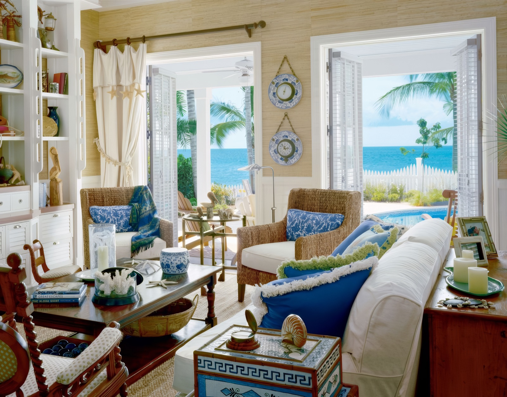

What I am learning about leading, one session at a time.
A ten-week leadership course, shared as it happens. I found the structure unusually practical and
the exercises genuinely fun, so I'm bringing a few of them to you, and this time you get to join in.
AuthorYuanzhen CaiProgrammeImperial College London · MBAFormat10 weekly sessions
Most leadership content tells you what leaders are. This course does something different: it
walks through the actual work of leading. It starts with what leadership even means and moves through
communication, coaching, storytelling, influence and difficult conversations, and ending with managing
your boss, working across cultures and leading change.
What I like most is that almost every session has you do something before you hear the theory.
You discover the idea on yourself first. That is the part I want to share.
The best exercises don't teach you a concept. They catch you in the act of it.
The ten sessions
The first exercise I'm sharing sits inside Session 3. Open it and play along. The rest will land here as I go.
A five-minute exercise about how we make sense of an ambiguous world, and why two smart people can look at the same thing and disagree completely. Play first. Theory last.
Step 1 · Your turn
Look at this room. Who lives here?

Tap the photo to zoom in
Imagine who might live in a house like this. Give them a name and invent some basic facts:
age, gender, ethnicity, profession
likes and dislikes
and, most importantly, why you think they would live here
Step 2 · The room fills up
Same photo, four very different answers
Same photo, same evidence. Read a few and notice how different the stories are.
Yours, mine and two from my cohort.
Step 3 · How the answers differ, and why
Same picture. Very different people.
Looking at my cohort's submissions, the differences were striking given that we were all looking at
the same picture. Classmate 1 is Greek and imagined a Greek-American family. Classmate 2 lives
in Uganda and imagined a Ugandan woman. I imagined a Chinese-American couple, made the wife a designer
and the husband an entrepreneur who retired early, roles that closely mirror my own background and
aspirations. (I'm Chinese, I work in design, and I'd like to start my own business and retire early myself.)
We weren't working from different evidence. The difference was what each of us projected onto it.
I noticed the blue-and-white porcelain and read it as Chinese. Someone else could look at the same
objects and see something else entirely, or not notice them at all. Each of us seems to have
unconsciously used our own identity, culture and life goals as the default lens for filling in an
ambiguous picture, rather than staying neutral.
This is the awareness of bias idea in action, and it ties closely to inclusive leadership.
If a simple picture of a house can produce such different, self-referential stories from a small
group, it's a useful reminder of how easily the same instinct could shape real judgements about
colleagues, candidates or team members who don't share our background.
Step 4 · The real answer
So, who does live there?
A family in the Florida Keys
A husband and wife with two young teenage children.
Where
The Florida Keys, USA
The husband
Owns the largest chain of RV dealerships in the southern US
The twist
It's from Architectural Digest, styled by an interior decorator
If it looked a little staged to you, that's because it was. The room in the photo was arranged
for the camera before anyone took the picture. So the "evidence" we all argued from wasn't even
a neutral record of how the family lives.
How close were you?
Step 5 · My takeaway
What the house taught me about leading
We build the story before we notice. The first thing that catches the eye triggers a hypothesis. It happens without thinking: our "System 1" brain is wired to find patterns and make meaning. For me it was the porcelain. For the professor it was the barometer and clock, because he sails.
Then we collect proof. We look for details that fit the story and skip the rest. Scientists do the opposite: they form a hypothesis, then hunt for evidence that disproves it. Our brains don't do that by default, so we grow more certain and add names, ages and hobbies that were never in the picture.
Then we disagree. In a meeting someone gives the opposite answer and the instinct is "what an idiot". A leader's job is not to win that argument. It is to make sure the decision rests on the best possible evidence.
The ladder of inference
A way to see what is happening in both heads. Each of us grabs a small slice of the data, interprets it, reaches a conclusion and acts. Then the results shape what we notice next. Two people on two ladders who just argue will never meet. Explore it below.
0Pool of all possible dataEverything in the room: shutters, coral, clock, stars, sea.
1Select dataI noticed the barometer and clock. You noticed the star curtains.Share data, details, stories."What data did you have for that?"
2Interpret dataNavigation instruments. Or: tidy, controlled."How did you get from that data to this conclusion?"
3Reach conclusions"They own a boat." Or: "They have no children."Share assumptions, conclusions, experience."What leads you to conclude that?"
4Take actionWe both keep finding details that fit.
↺ Results feed back into what we select next, which is why we get more sure, not less.
Everyone climbs. Few notice.
Press the button to climb it with the house as the example. Two people can start in the same pool and end up at opposite tops.
Advocacy: explain your ladder
Stop standing at the top and climb down, telling the other person how you got there: the data you selected, how you read it, what you concluded.
"This is what I think, and here's how I got there."
"I'm assuming that, and I came to this conclusion because…"
Inquiry: ask about theirs
Often the stronger tool. Questions get you information, and they show the other person you take them seriously. Walk them down their ladder.
"Walk me through that."
"Can you give me an example?"
Make them real questions. "You can't really believe that, can you?" is not one.
What I'm taking with me
I will form a story about a house, a candidate or a new colleague within seconds, and it will feel certain. The skill is not to stop that. It is to ask "what did I select, and what did I skip?", then use advocacy and inquiry to find out what the other person selected, and check both of our conclusions.
Thanks for engaging with the exercise.
I hope it made you curious about what you notice first, and what you leave out.